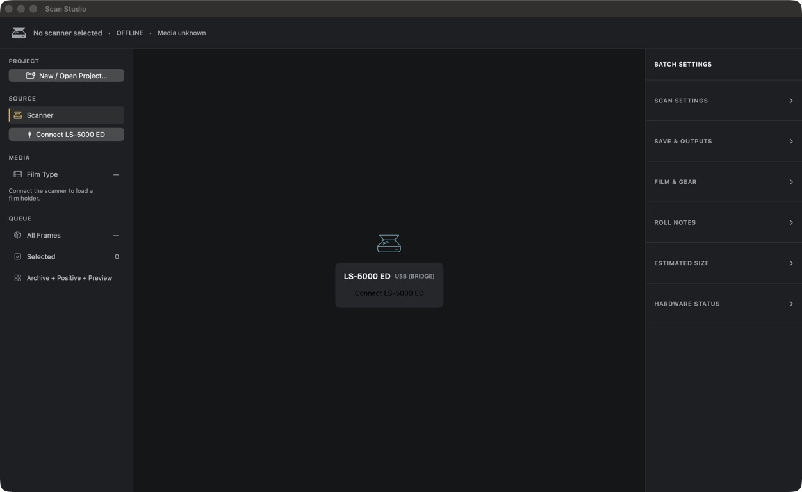

A current home for a dedicated film scanner
Your Nikon film scanner, on a current Mac.
ScanStudio is a native macOS app for the Nikon SUPER COOLSCAN 5000 ED, also called the LS-5000. It detects the loaded holder, previews the film, and keeps a 35 mm scanning job in one place.
This is alpha software tested on one Mac and one scanner setup. A connected scanner can move film, so stay nearby and supervise every real job.

What is a Coolscan?
A Coolscan is a dedicated scanner for 35 mm film.
It reads a negative or slide directly instead of photographing it with a camera. The LS-5000 is older hardware, still useful for sharp 4000 dpi film scans and an infrared channel on many color films.
The scanner is only half the job. You also need software that can identify the holder, let you inspect the frames, and make clear what will happen before transport starts. ScanStudio is a replacement for the practical Nikon Scan workflow on the tested setup.
The working screen
Preview first. Then make the scan you mean to make.
The main workspace puts the current action, film state, and selected frames ahead of the settings that support them.
-
Connect and identify the holder
The scanner reports its carrier and media when it can. The simulator remains visibly labeled.
-
Preview the roll or strip
Review the contact sheet and align individual frames before a full capture begins.
-
Choose frames and settings
Set film treatment, recipe, outputs, destination, and adaptive names for the selected batch.
-
Scan with a Stop control
Follow per-frame progress, stop safely when needed, then review the saved outputs and receipts.
One capture, the files you need
Archive the master when you need it. Make a positive when you want one.
The 1:1 archive bundle
Keep the capture evidence with the image.
An optional archive bundle is a practical record of a completed frame. It keeps the separately saved RGB master, conditional infrared and meter or prepass evidence, the effective settings and alignment, and the receipt trail that describes the attempt.
RGB master
The high-bit-depth source scan when archival output is selected.
It remains a separate capture file. The bundle records what it contains instead of replacing it.
Conditional infrared
Infrared evidence for compatible film where the scanner captured it.
Digital ICE can use this channel on supported material. Traditional silver black-and-white film does not provide usable infrared here.
Meter and prepass evidence
Exposure and preview information available before final capture.
The bundle includes it when the job produced it.
Settings and alignment
The effective scan recipe, output choices, and per-frame alignment.
These values make a later review less dependent on memory.
Engine and bridge receipts
Machine-readable results from the app engine and hardware bridge.
Attempt journals are included only when the bridge reports their exact evidence root.
Manifest and checksums
A manifest identifies the included files; checksums help check whether they changed.
Absent evidence stays absent and is recorded as such.
For black-and-white film, ScanStudio keeps infrared-based ICE off and can use a separate software dust-cleanup option. That cleanup is a rendering choice, not a claim that an infrared dust map exists.
Scope before promises
This is alpha software for one tested setup.
The current workflow has been tested on one Mac and one Nikon SUPER COOLSCAN 5000 ED or LS-5000 setup. It does not establish support for other Coolscan models, adapters, Macs, operating systems, or film holders.
- Hardware and film
- Opening the app prepares its scanner session, but does not move film. Preview, Scan, and Eject are explicit actions. Confirm the detected carrier, preview after a refeed or ejection, and supervise live work.
- Dust treatment
- Digital ICE requires suitable infrared material. It is disabled for traditional silver black-and-white film; software dust cleanup is a separate option.
- Release state
- An Apple Silicon alpha DMG is available from GitHub Releases. It is ad-hoc signed rather than notarized; there is no support or release-schedule promise.
- Names and marks
- ScanStudio is independent software. Nikon and Coolscan are trademarks of Nikon Corporation. No affiliation or endorsement is claimed.
Source and feedback
Try it carefully. Tell us what the scanner did.
The source, current limits, and issue tracker live together. When a real job goes wrong, report the device state and the human-facing error without posting scans, private paths, serial numbers, or capture journals.